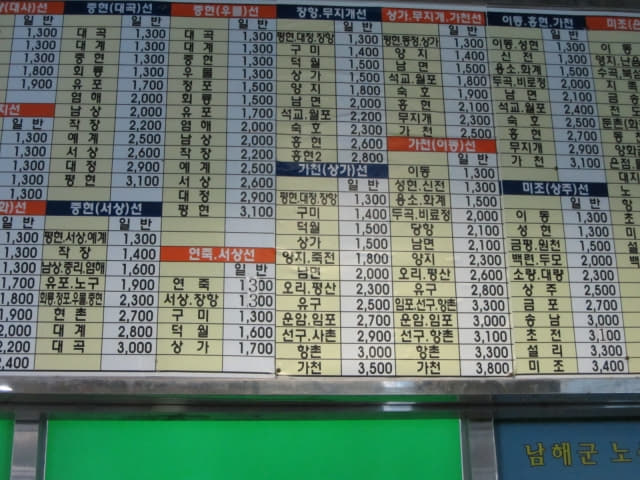
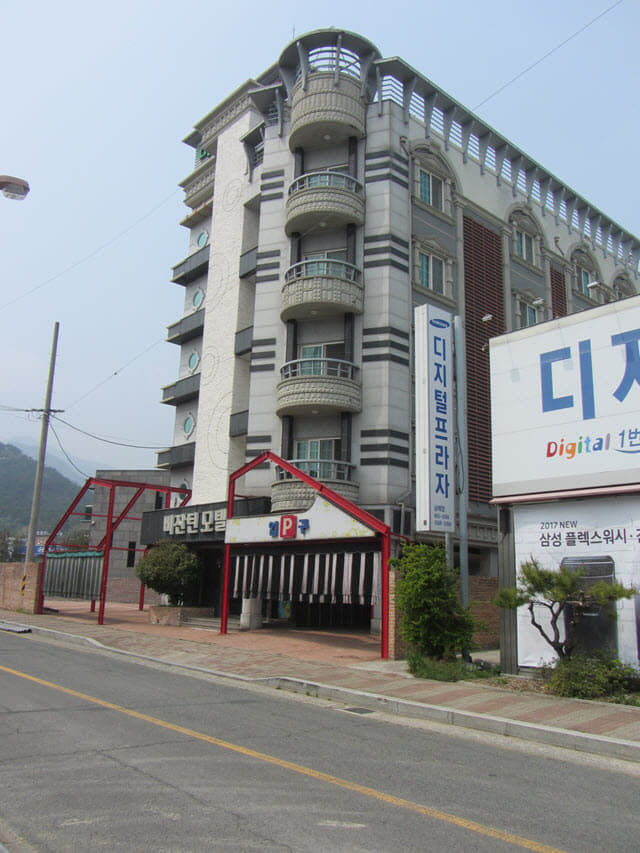

巴士準時在早上九時二十分從順天綜合巴士客運站開出, 沿途交通暢通, 早上十時十五分駛過跨越露梁海峽的南海大橋, 進入了南海郡, 接著再行駛約十五分鐘, 於早上十時二十五分抵達終點站 — 南海公用客運站。南海是我一直想來的地方, 多年前曾計劃前來, 可惜因某些原因而告吹, 今天終於踏足這裡, 心情真是萬分興奮!
南海有很多景點, 分散很廣, 因不清楚巴士時刻表, 其實最主要想悠閒一些, 慢慢欣賞, 所以安排了在南海住宿三晚, 希望可以不徐不疾地順利完成大部份行程。
在南海乘巴士, 可以說沒有什麼計劃或預算的, 必須要有耐性, 未來的幾天, 我們都是買完車票才知道下一班巴士是什麼時間, 在中途站更是望天打卦, 幸好我們在南海的運氣很好, 當每次徬徨之際, 總有吉星出現, 順利完成行程, 也許, 這正是旅遊的最大樂趣。
南海公用客運站 (남해시외버스터미널)
在月台下了車, 進入車站大堂, 先四處參觀才開始找旅館。

巴士路線圖和時刻表, 對我們來說, 只是一堆怪符號, 一點也看不懂, 不過也拍下來, 希望對計劃來南海的朋友有所幫助。


原本計劃住宿汽車站附近 最後竟然走到最遠的一間旅館
在南海公用客運站大堂流連了一會, 接著先找旅館, 放下行李, 才開始南海的行程。南海有很多汽車酒店, 主要集中在南海公用客運站附近的第122街、第96小街、第78小街和第38小街, 所以不愁找不到合適的旅館。其實各旅館價錢相差不大, 但素質卻有很大的分別。
因未來幾天我們都是在南海公用客運站乘車往各旅遊景點, 回程也是在這裡下車, 為了方便一些, 不用走那麼多路, 所以計劃下榻在汽車站附近的旅館, 但因時間太早, 沿途所經過的旅館不是在清潔中, 就是服務台沒有職員, 最後竟然走到離汽車站最遠的 남해 맨하탄 (Manhattan Motel), 看見前面再沒有旅館, 唯有上樓逐層四處找職員!
以下是南海的汽車酒店分佈地圖:
從月台前的小路走出南海公用客運站, 未來幾天我們都是在這裡乘車往各旅遊景點。
第122街 (화전로122번길)
走出南海公用客運站, 來到第122街, 馬路斜對面便是「비잔틴모텔」汽車酒店, 這間是最接近客運站的, 看見外型很好, 頗高級的, 便走去問問價錢。走進一樓, 喊了一會, 一位男子從昏暗的服務台彎腰探出頭來, 我們表示要租房, 他馬上「耍手擰頭」, 估計應該是清潔時間, 尚未可以辦理入住。
不知要等多久, 心想反正附近還有很多汽車酒店, 便離開。

離開「비잔틴모텔」汽車酒店, 馬路斜對面便是「CF 모텔」汽車酒店, 同樣接近客運站, 外型也不錯, 但服務台半個人影也沒有, 喊了幾分鐘, 都沒有回應, 唯有離開。
離開「CF 모텔」汽車酒店, 繼續向前走。
經過一個黃澄澄的油菜花田, 十分漂亮。
來到一個分叉路口, 「파인빌」旅館就在不遠處的路旁, 看見外型十分殘舊, 好像上海街的舊唐樓, 這樣的質素, 不用走去看啦!
第96小街 (화전로96번가길)
接著在分叉路口轉左沿第96小街走, 馬路兩旁都是一間接連一間的店舖, 比南海公用客運站附近街道熱鬧很多。
經過南海傳統市場 (남해전통시장 Namhae Traditional Market), 市場內一片昏暗, 所有攤檔都沒有營業。
第78小街 (화전로78번가길)
繼續往前走一會, 來到一個十字路口, 緊接是第78小街。
繼續往前走, 「남해장여관」旅館就路口, 是在一條非常狹窄的小巷內, 給人不舒服的感覺, 也不進去看了。
「남해장여관」旅館隔鄰是牆身咖啡色的「장수장모텔」汽車酒店, 外型一般, 也勉強可以接受, 看看價錢才決定, 便推門進入, 服務台同樣半個人影也沒有, 喊了幾分鐘, 都沒有回應, 沒辦法, 唯有又離開。
不是嗎? 望望手錶, 已經差不多早上十時五十分, 不經不覺走了二十分鐘。唉! 一心想下榻在汽車站附近的旅館, 想不到越走越遠!
「怎麼辦? 掉頭返回南海公用客運站旁的兩間汽車酒店, 看看現在會否可以辦理入住手續? 還是繼續向前走? 前面還有三至四間 Motel。」我問她, 看她如何決定。
「如果南海公用客運站旁的兩間汽車酒店仍然不可以辦理入住手續, 怎麼辦? 到時又再走來這裡?」她回應。「說不定前面的 Motel 有人呢!」
不用說啦! 繼續沿第78小街向前走。
第38小街 (화전로38번가길)
走過了第78小街, 接著是第38小街。
沿第38小街走一會, 左邊是一間名為「영남장여관」的旅館, 好像住宅的, 同樣不用看了! 因為住三晚, 要求當然高一些, 想找一間質素比較好的旅館。
繼續向前走一會, 一間外型十分高級的大樓在右邊閃出, 看來好像是一間酒店, 看清楚, 原來是「J 모텔」汽車酒店。看見外型那麼好, 當時已決定在這裡住宿, 便匆匆穿過入口前的停車場, 走進一樓接待處。唉! 接待處同樣沒有人, 唯有站著等。等了一會, 住客從我們身邊出出入入, 感覺有點尷尬。在這裡等不是辦法, 她唯有乘電梯往樓上, 看看有沒有職員可以幫忙。過了一會, 她乘電梯返回一樓, 很氣憤的對我說樓上同樣沒有人!
「前面還有最後兩間汽車酒店, 已經來到這裡, 不如走去看看, 多一個機會, 假如都沒有人才再作決定吧!」我對她說。
南海下榻離汽車站最遠的 Manhattan Motel 回報是優質房間
離開「J모텔」汽車酒店, 向前走一會, 走過一株種在路中央的大樹, 在前面的十字路口轉右, 來到花煎路(화전로)。
只走十多步, 已看見右邊路旁兩間並排的汽車酒店 —「만석모텔」和「남해 맨하탄」。 論氣派, 「남해 맨하탄」比「만석모텔」高級不知多少倍, 而且門前還有 Manhattan Motel 這兩個奪目的英文大字, 令人聯想起美國紐約市的曼哈頓區, 看來比剛才的「J모텔」還好很多, 當然是首選啦!
接著立即走進 Manhattan Motel 一樓接待處, 喊了幾聲, 都是沒有人!
不是嗎? 今天是什麼好日子? 所有旅館都沒有人的!
從南海公用客運站走來, 經過很多間酒店, 單從外型來看, 這間肯定是最好的, 而且前面再沒有酒店了, 看來肯定要下榻在這間! 那怎麼辦? 其實只有一個辦法, 剛才在「J모텔」已試過, 就是由她上樓看看有沒有職員可以幫忙, 不過這次要更積極一些, 逐層四處喊找職員!
接著她乘電梯往五樓, 打算由頂樓開始搜尋, 這次很幸運在五樓其中一間房間找到了一位清潔女工。當清潔女工知道她想租房間後, 便和她一起乘電梯返回一樓, 接著清潔女工開門走入昏暗的服務室, 大喊了幾聲, 然後嘰哩咕嚕了一輪, 過了一會, 服務室的燈亮了, 一位睡眼惺忪的中年女子慢慢的走到服務台, 原來接待處不是沒有職員, 原來是在裡面睡覺!
謝過清潔女工, 她也乘電梯返回樓上工作。
因為她剛才已經看過房間, 十分滿意, 便付了三晚房租, 共 150,000 韓元, 即每晚只是 50,000 韓元。
接著乘電梯往5F房間, 開門一看, 房間十分寬敞、舒適和清潔, 以這樣的價錢, 簡直超值啦! 從南海公用客運站走了半小時, 亂碰亂撞找到這間酒店, 總算沒有白走。
最喜歡是靠窗的木製圓桌子, 可以很舒適的在那裡吃早餐和夜宵。
當然還最喜歡這電腦和桌子。
浴室十分清潔。

{kind=link}
{kind=link}